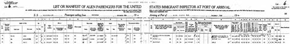

Margarethe Schwarz
1892–1977
Life events
| Born | |
|---|---|
| Lived | 24 Jul 1898 · 1200 Bäuerlegasse 19, Vienna, Austria Map · per Richard's birth |
| Lived | 14 Feb 1909 · 1200 Bäuerlegasse 19, Vienna, Austria Map · per Philipps' marriage |
| Lived | 14 Sep 1919 · 1200 Wolfsaugasse 10-21, Vienna, Austria Map · per marriage record |
| Married | 14 Sep 1919 · Juda Wolf 'William' Reich · Brigittenauer Tempel, 1200 Kluckygasse 11, Vienna, Austria Map  |
| Departure | 8 Dec 1939 · Rotterdam, Zuid-Holland, Netherlands Map |
| Arrival | 22 Dec 1939 · Manhattan, New York Map |
| Lived | 1940 · Manhattan, New York Map · Marital Status: Married; Relation to Head: Sister-in-law |
| Lived | 1950 · New York Map · Relation to Head: Wife; Marital Status: Married |
| Lived | before 1951 · Manhattan, New York Map |
| Died | 22 May 1977 · Forest Hills, New York Map · NY/NJ. Amended to the Vienna, Austria birth record. 21 May 1959 Forest Hills |
| Buried | Flushing, New York Map |
Family


Juda Wolf 'William' Reich1893–1963
Photos

Samuel Blau
Leonore Lotti Fuchs
Moses Moritz Schwarz
Margarethe Schwarz
Oskar Blau
Margarethe Schwarz
Juda Wolf 'William' Reich

Leonore Lotti Fuchs
Margarethe Schwarz
Rose Schwarz
David Berg Bohrer
Margarethe Schwarz